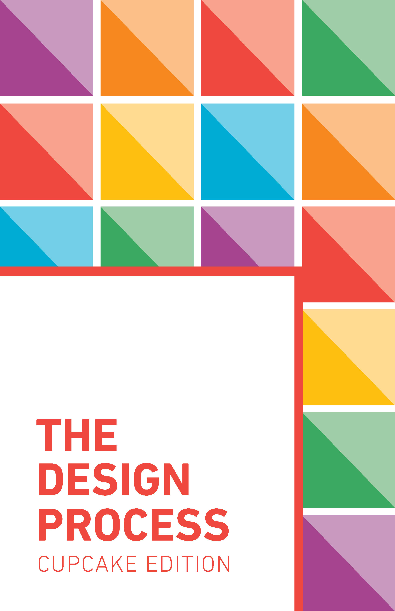
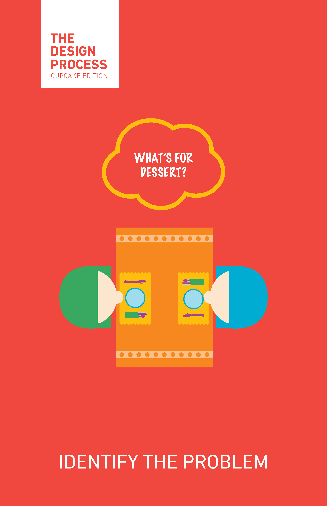
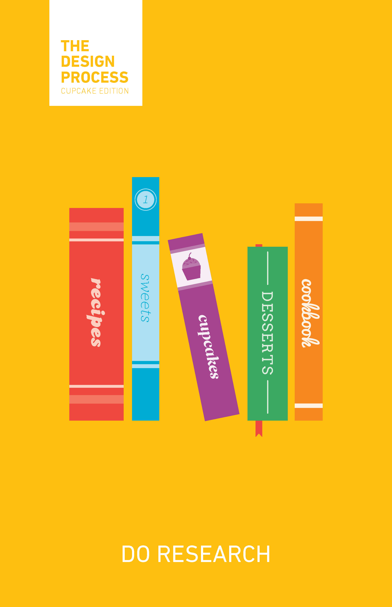
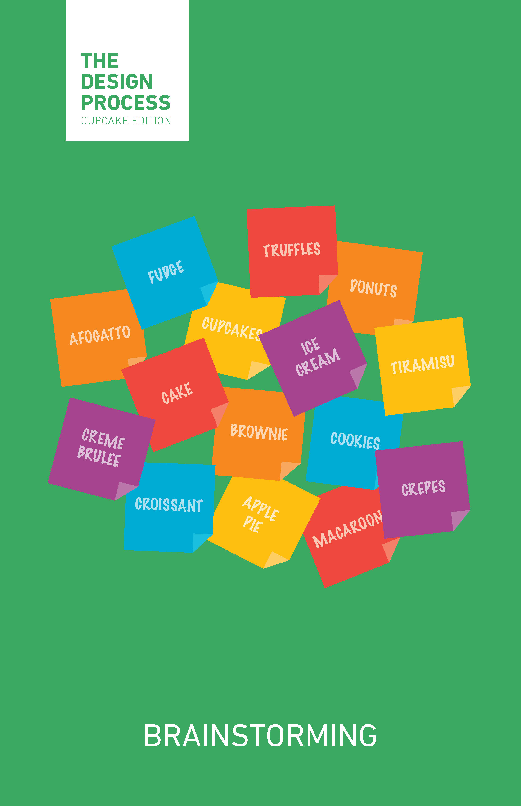
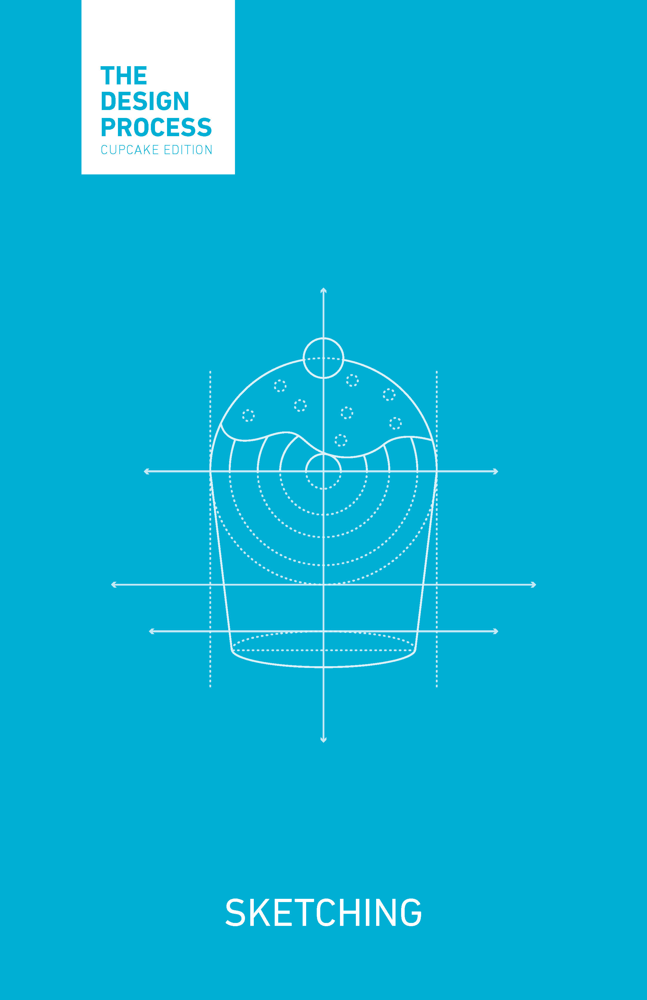
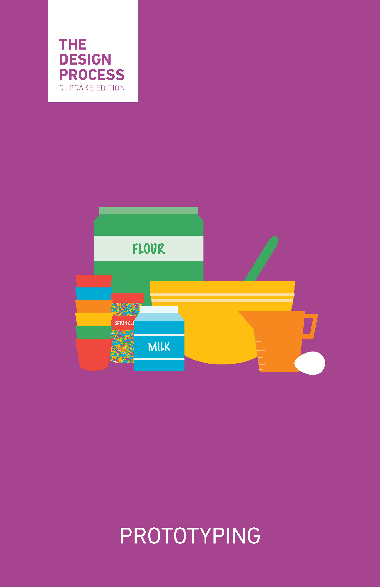
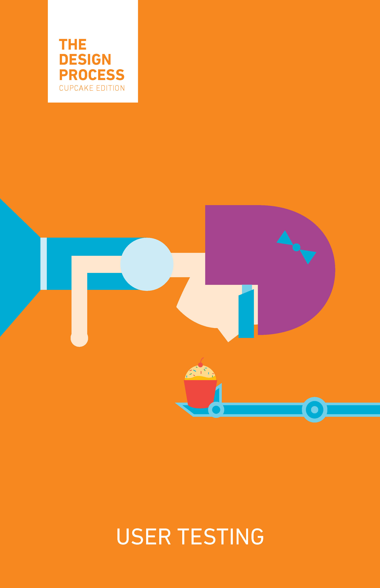
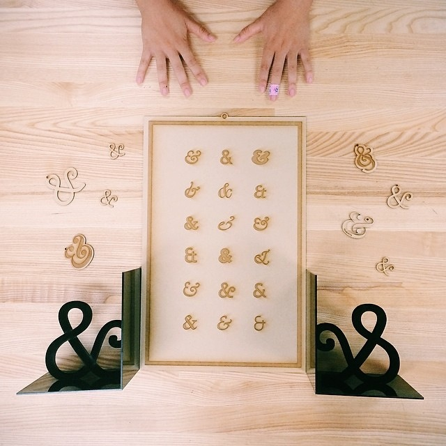

Visual Design
Posters & Illustrations
Summary
These are some random little posters and illustrations I created both for friends and for fun. I love designing these when I'm in the midst of a creative block! They're also a fun way to brainstorm ideas for tutorials or workshops.
I draw most of my inspiration from Disney concept art, high fashion, and modern art. Lately, I've been especially obsessed with the colorful artwork from Big Hero 6. You can find some of my inspirations on this Pinterest Board!
-
Horizontal Cocktails (2013) These posters were designed as a parting gift for my team at LinkedIn. Each co-worker is represented by the drink that best embodies his/her personality. 
-
The Design Process: Cupcake Edition (2014) These posters were designed as decoration for the Berkeley Innovation + Google Designathon. I wanted to create something that would light up the rooms while being useful at the same time.  -  
-  
-  
-
An Illustration a Day (2015) An illustration a day for practice! I restarted my endeavor on January 8, 2015. We'll see how long this lasts. Check out my blog for daily updates. -
Ampersands (2014) Laser cut wood ampersands.  -
Typography is Awesome (2013) I originally created this to teach my students about basic type anatomy. 
-
Happy New Year (2013) I made this for New Year's in 2013 to experiment with texture and shading. This illustration is inspired by the Art Deco Movement. 
{kind=link}